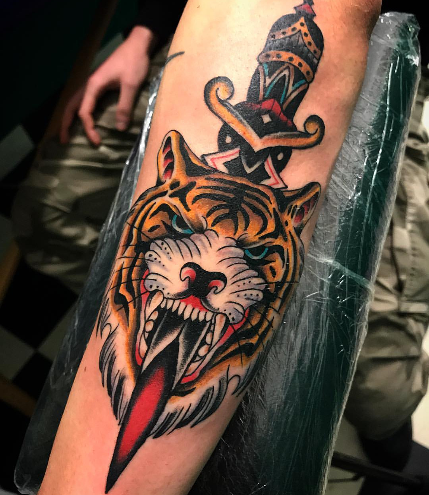
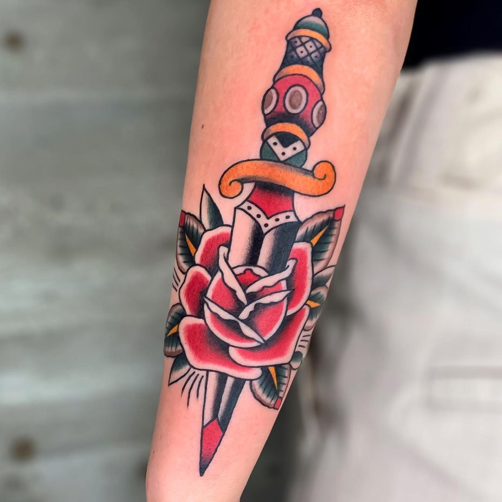
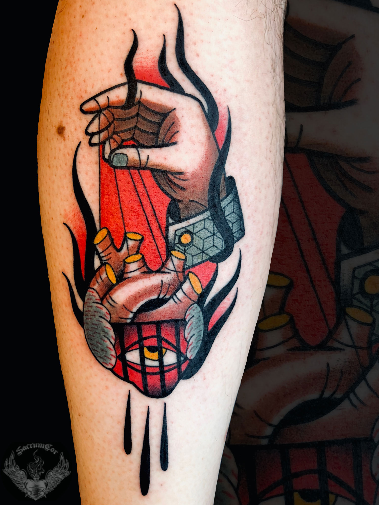
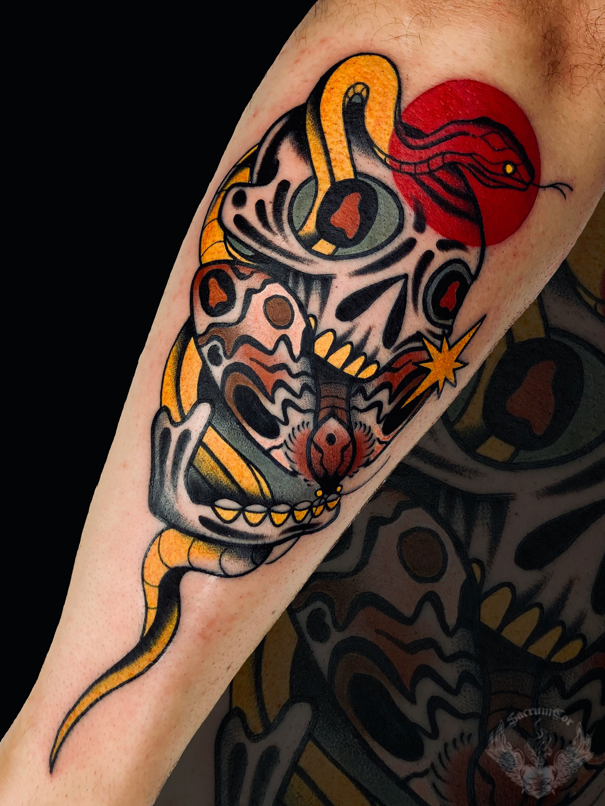
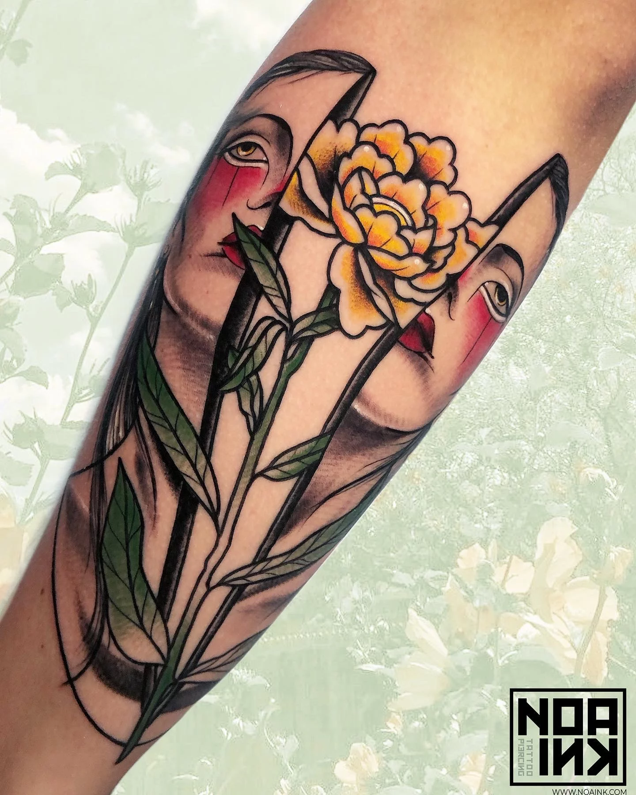
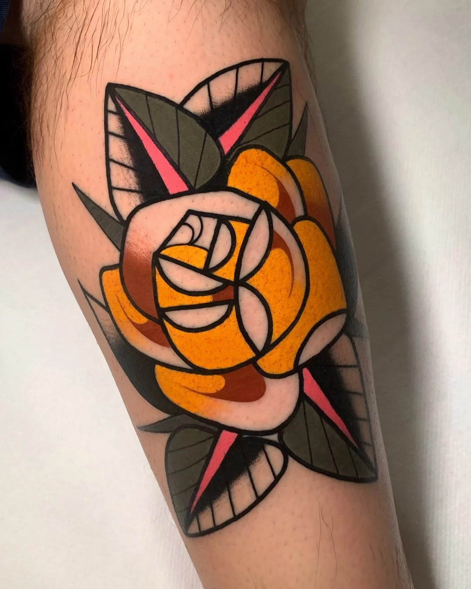
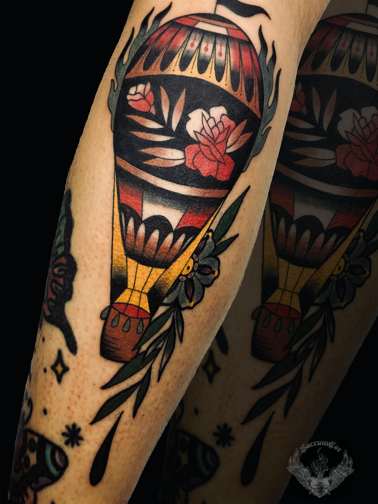

Old School
Stile
Il tatuaggio Old School si sviluppa grazie all’interazione tra l’arte tradizionale polinesiana del tatuaggio e la sua contaminazione con i mariani americani degli anni 50 e diventa quello che ormai conosciamo come il traditional tattoo.
L’uomo considerato l’artista e l’ideatore di questo stile è Norman Keith Collins, ed è passato alla storia del tattoo col soprannome di Sailor Jerry.
Linea nera forte e decisa, la quasi totale assenza di sfumature ed ombre, ad eccezione di piccoli punti che rendono bidimensionale il soggetto. I colori utilizzati sono limitati, soprattutto agli antipodi rosso, nero e giallo.
Photogallery






